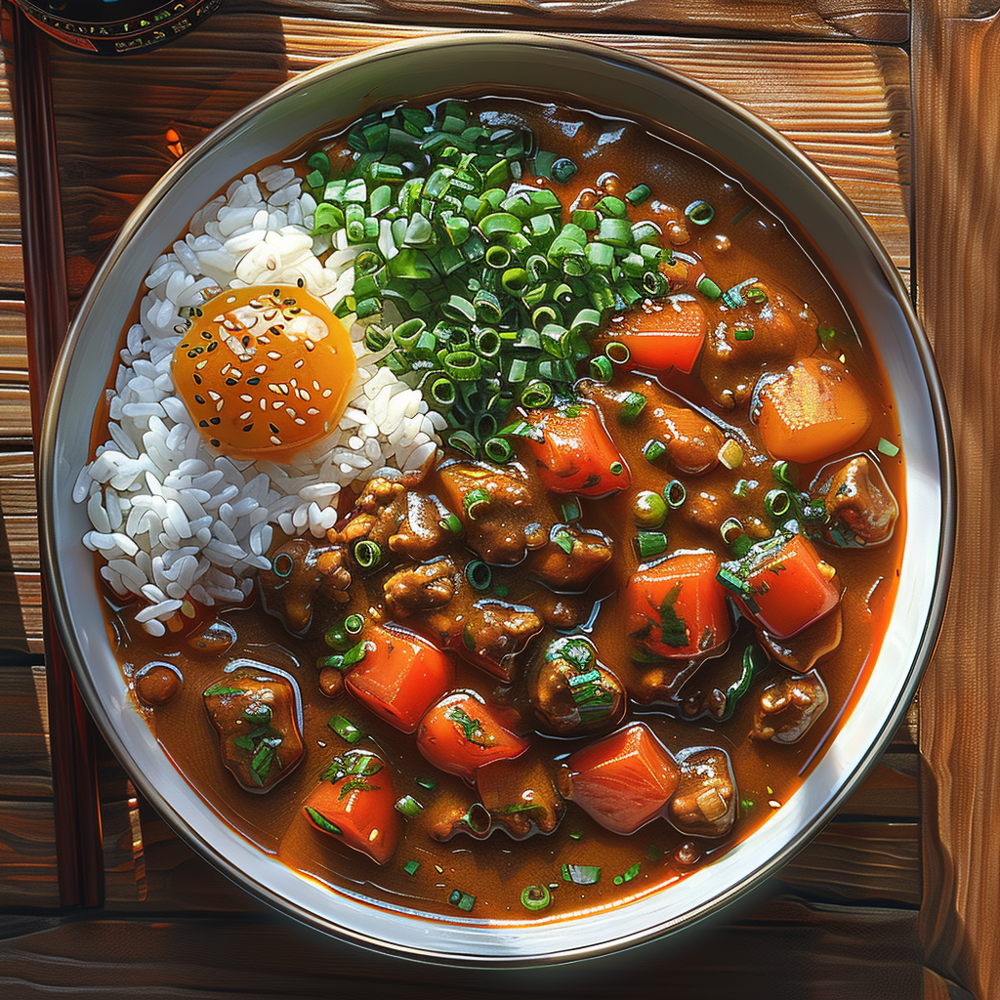

Kare Raisu

Description
This is a recipe from Daniel Gritzer. The original recipe page can be seen HERE
I love japanese curry. The best.🤤
Ingredients
For the Curry Spice Blend:
- 2 tablespoons (7g) whole coriander seeds, toasted in a dry skillet until fragrant
- 1 tablespoon (6g) whole cumin seeds, toasted in a dry skillet until fragrant
- 1 tablespoon (6g) whole fenugreek seeds, toasted in a dry skillet until fragrant
- 2 1/2 teaspoons (6g) cardamom seeds, toasted in a dry skillet until fragrant (see note)
- 2 teaspoons (5g) whole black peppercorns, toasted in a dry skillet until fragrant
- 1/2 teaspoon (2g) fennel seeds, toasted in a dry skillet until fragrant
- 1 (2-inch) piece cinnamon (3g)
- 3 cloves
- 1/2 of a star anise pod
- 1 or 2 strips (1g) dehydrated orange peel (optional; see note)
- 2 tablespoons (16g) ground turmeric
- 1/4 to 1/2 teaspoon (1 to 2g) chile powder, depending on the intensity of your chile powder and how spicy you want the curry
- Pinch grated fresh nutmeg
For the Stew:
- 1 pound (450g) boneless, skinless chicken thighs
- Kosher salt and freshly ground black pepper
- 2 tablespoons (30ml) vegetable oil, plus more as needed
- 1 large yellow onion (1 pound; 450g), diced
- 8 ounces carrots (225g; about 3 medium), peeled and cut into 1/2-inch pieces
- 1 quart (950ml) homemade chicken stock or store-bought low-sodium broth
- 1 quart (950ml) homemade or instant dashi (see note)
- 1 pound (450g) Yukon Gold potatoes, peeled and cut into 1-inch chunks
- Half of one 6-ounce apple, peeled, cored, and finely grated, minced, or puréed
- 1/2 cup unsalted butter (4 ounces; 110g)
- 1/2 cup all-purpose flour (2 ounces; 55g)
- 1 (2-inch) piece peeled fresh ginger, finely grated
- Curry spice blend
- 1 cup frozen peas (5.5 ounces; 160g), if desired
- Warm short-grain rice, for serving
- Pickled ginger and/or rakkyo (pickled Japanese scallion), for serving
Directions
- For the Curry Spice Blend: In a spice grinder, combine coriander, cumin, fenugreek, cardamom, black peppercorns, fennel, cinnamon, cloves, star anise, and orange peel (if using) and grind to a fine powder. Empty into a small bowl and combine with turmeric, chili powder, and nutmeg, then set aside.
- For the Stew: Season chicken all over with salt and pepper. In a large Dutch oven, heat oil over medium-high heat until shimmering. Add chicken and cook, turning, until browned on both sides, about 6 minutes. Transfer chicken to a plate and set aside.
- Add onion to Dutch oven, lower heat to medium-low, and cook, stirring, until golden, about 10 minutes. Add carrots and cook for 4 minutes. Add chicken stock and dashi and bring to a simmer over high heat; reduce heat to maintain a simmer.
- Cut up chicken into bite-size pieces and add back to pot, along with any accumulated juices. Add potatoes and apple and cook at a gentle simmer until potatoes are tender and carrots can easily be pierced with a fork, about 15 minutes.
- Meanwhile, in a medium saucepan, melt butter over medium heat until foaming. Stir in flour and cook, stirring, until roux is a deep caramel brown, about 20 minutes. Stir in ginger and 3 tablespoons (25g) curry spice blend and cook for 1 minute. Remove from heat and let cool slightly.
- Scrape roux into stew pot, stir well, and simmer until broth has thickened. Season with salt and pepper. Stir in peas, if using, and cook until heated through.
- Serve curry with cooked rice and pickled ginger and/or rakkyo.
Notes
If you have cardamom pods, toast the pods first, then crack them to remove the seeds.
You can dry orange peels on a baking sheet in an oven set to its lowest setting; check them frequently, and remove when dehydrated.
If you don't have dashi, you can use the same volume of additional chicken stock to replace it.